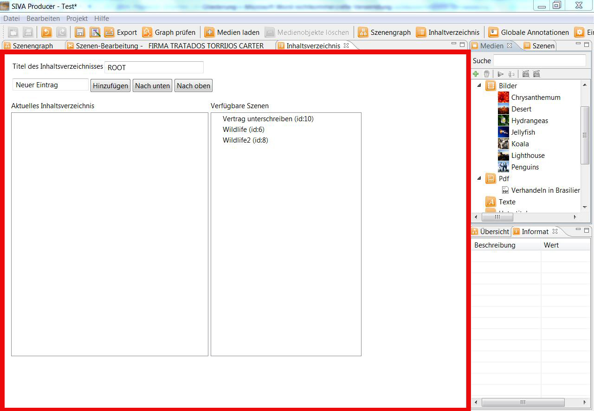
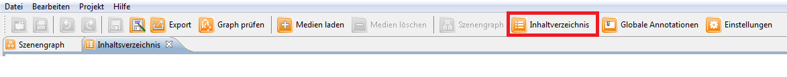
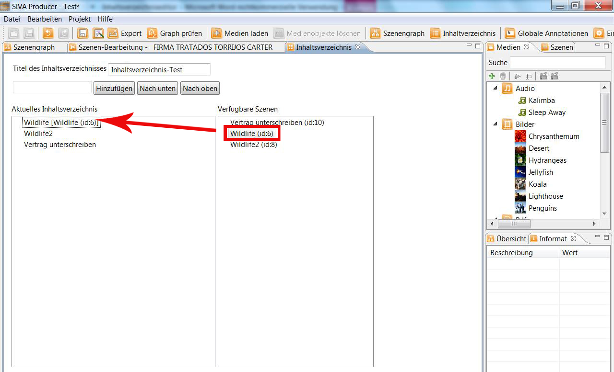
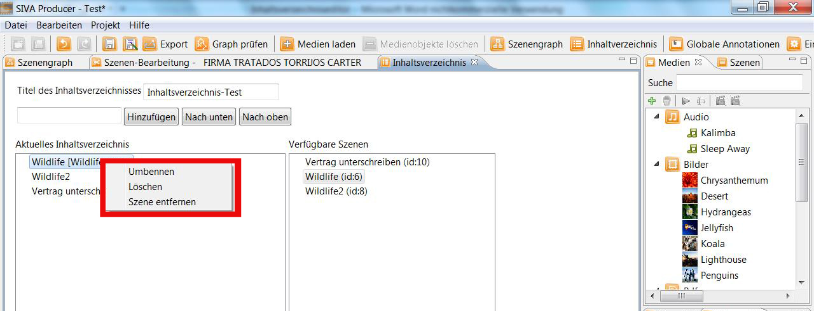
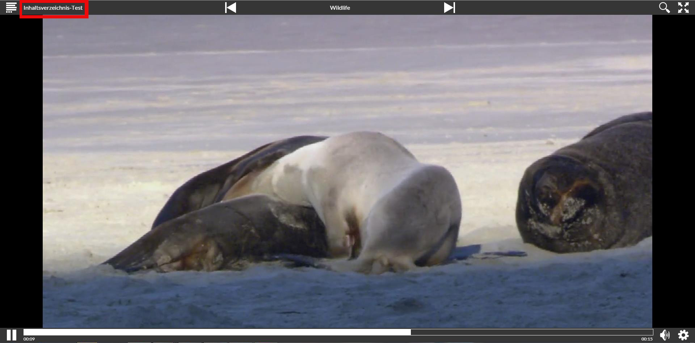
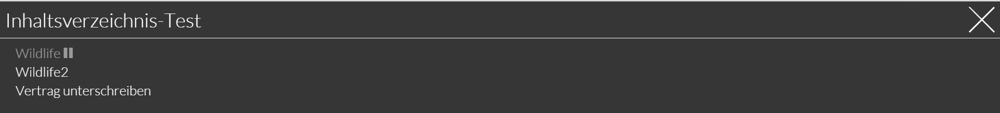

Content editor
In the Content editor the tabele of contents of the project can be createt and edited.

You can open the content editor by clicking onto the symbol in the taskbar.

Now you can select a title for your table of contents and you can add entries.
Via drag and drop you can link the scenes with one entry.

If a new entry has been added to the table of contents you can rename, delete as well as remove an added scene.

In the finished project this could look as follows:

If you click onto the title of the table of contents a new site opens where the entire table of contents is displayed.
